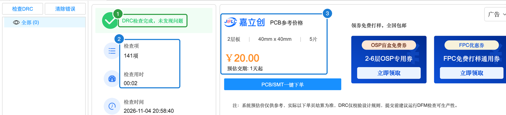
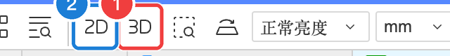

A-9 检查 DRC 与 3D 预览
下单之前做最后一次体检：让软件按设计规则把整块板子查一遍（DRC），再用 3D 预览从各个角度看看做出来是什么样子。
⏱ 约 10 分钟✅ 本例 DRC：141 项检查，0 个问题
A9.1 PCB 的 DRC 检查#
- 点菜单「设计」→「检查DRC」（工具栏上也有 DRC 按钮）
- 底部面板切到「DRC」，几秒钟后出结果

图 A9-1①DRC检查完成，未发现问题；②检查项 141 项、用时 2 秒；③旁边顺便显示了参考价格
本例的结果：未发现问题。面板右侧还显示了嘉立创的参考价格：2 层板、40 mm × 40 mm、5 片 ¥20.00、预估交期 1 天起。
A9.2 3D 预览#
- 点工具栏上的「3D预览」按钮（在「2D预览」右边）

图 A9-2工具栏：①3D预览 ②2D预览
会打开一个新的「3D」标签页，按住鼠标拖动可以旋转，滚轮缩放：
 图 A9-33D 预览：蓝色是 3D 预览的默认阻焊颜色，白色是丝印，USB 插座伸出板边
图 A9-33D 预览：蓝色是 3D 预览的默认阻焊颜色，白色是丝印，USB 插座伸出板边
在 3D 里重点看这几件事：
- USB 插座的插口朝外、伸出板边，线能插进去
- 元件没有互相重叠
- 丝印文字清楚、没有压在焊盘上
- LED 的位置是你想要的“表情”
A9.3 2D 预览#
「2D预览」按钮会生成一张模拟“实物照片”的俯视图，比 3D 更接近真实板子的样子，适合检查丝印：
 图 A9-42D 预览
图 A9-42D 预览